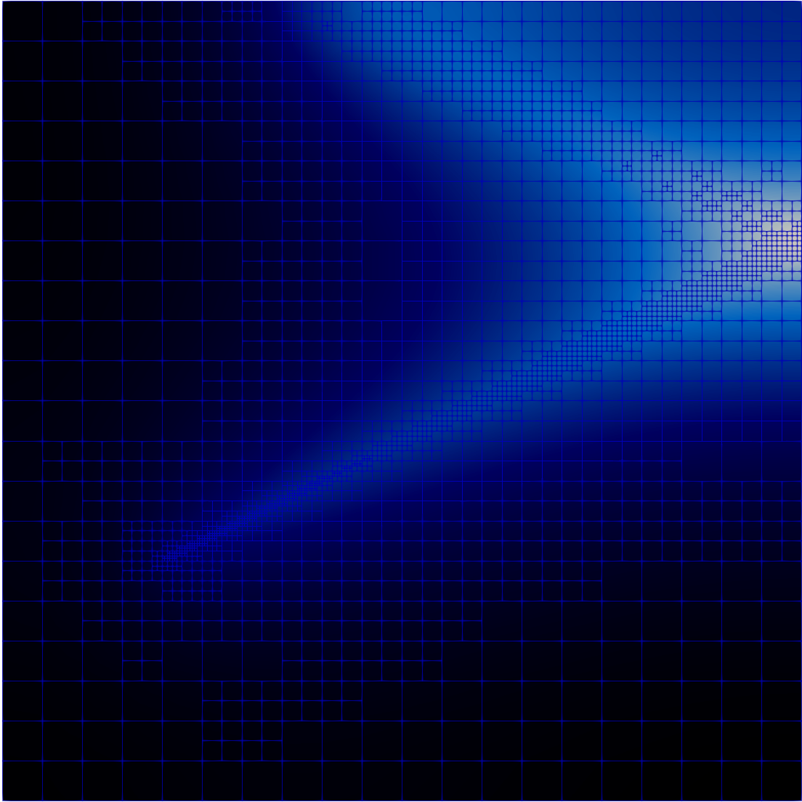

Flashlight Point Sources
A "flashlight" point source is an anisotropic point source that emits in a cone about a direction . The cone is defined by the vector along the cone axis and half of the opening angle in degrees.
The Ray Tracing Module is utilized for this example to discretize the angular integration. An angular quadrature is sampled within the cone and a Ray generated for each direction. These Rays contribute to PDEs solved on the domain via line sources.
Example
Consider a problem on a two-dimensional mesh in the physical domain . It will contain a reaction term formed by the Reaction / ADReaction kernel and a diffusion term formed by the Diffusion kernel. The anisotropic point source located at emits a source in a cone about . The right boundary will specularly reflect the point source.
The input begins with the basic definition (the mesh, the Reaction / ADReaction and Diffusion kernels, and an Executioner System) as:
[Mesh]
[gmg]
type = GeneratedMeshGenerator
dim = 2
nx = 10
ny = 10
xmax = 5
ymax = 5
[]
[]
[Variables/u]
[]
[Kernels]
[reaction]
type = Reaction
variable = u
[]
[diffusion]
type = Diffusion
variable = u
[]
[]
[Executioner]
type = Steady
solve_type = PJFNK
petsc_options_iname = '-pc_type -pc_hypre_type'
petsc_options_value = 'hypre boomeramg'
[]
Defining the Study
A ConeRayStudy is defined that generates and executes the rays within the cone:
[UserObjects/study]
type = ConeRayStudy
start_points = '1 1.5 0'
directions = '2 1 0'
half_cone_angles = 2.5
ray_data_name = weight
# Must be set with RayKernels that
# contribute to the residual
execute_on = PRE_KERNELS
# For outputting Rays
always_cache_traces = true
[]
A summary of the set parameters is as follows:
"start_points" - The apex of the cone, defined as
"directions" - The direction of the center line of the cone, defined as .
"half_cone_angles" - Half of the opening angle of the cone in degrees, defined as
"ray_data_name" - A name for the data on the Ray to be registered that stores the weight from the angular quadrature
"execute_on" - Set to
PRE_KERNELSso that the Rays are executed with the residual evaluation"always_cache_traces" - Enabled to cache information for outputting the Rays in a mesh form (see RayTracingMeshOutput)
Defining the RayBCs
RayBCs are objects that operate on Rays that intersect a boundary. We require the following:
A RayBC that reflects the rays on the right boundary in a specular manner
A RayBC that ends the rays on the top boundary that are reflected off of the right boundary
In specific, we will add a ReflectRayBC on the right boundary and a KillRayBC on the top boundary. These are implemented as follows:
[RayBCs]
[reflect]
type = ReflectRayBC
boundary = 'right'
[]
[kill_rest]
type = KillRayBC
boundary = 'top'
[]
[]
At this point, it is important to note that it is not necessary to provide the "rays" parameter to any added RayKernels or RayBCs, unlike what was done in Using Line Sources or Computing Line Integrals. This is because the ConeRayStudy does not have Ray registration enabled (see Ray Registration for more information). Ray registration requires that a name be associated with each Ray. It is disabled in the ConeRayStudy because the large number of Rays generated makes it unreasonable to name each one.
Defining the RayKernel
RayKernels are objects that are executed on the segments of the Rays. In this case, each Ray will act as a line source as it is traced. For this, we will add a LineSourceRayKernel as follows:
[RayKernels/line_source]
type = LineSourceRayKernel
variable = u
# Scale by the weights in the ConeRayStudy
ray_data_factor_names = weight
[]
Take note of the supplied parameter "ray_data_factor_names". Recall that within the defined ConeRayStudy, we supplied the parameter "ray_data_name", which is the Ray data that will store the weights from the angular quadrature and the user defined scaling factors (if any). The "ray_data_factor_names" parameter in LineSourceRayKernel will scale the source by the given Ray data, which effectively scales the line source term by the angular quadrature weights and the user defined scaling factors (if any).
Result
The problem is ran with
./ray_tracing-opt -i test/tests/userobjects/cone_ray_study.i
and the result (in cone_ray_study_out.e) is pictured below in Figure 1.

Figure 1: Result for the diffusion-reaction problem with a flashlight point source.
Refined Result
Admittedly, the result in Figure 1 is not particularly satisfying in a visual sense. We need more elements! Let's take advantage of the Adaptivity System. With this, take note of the Adaptivity block:
[Adaptivity]
steps = 0 # 6 for pretty pictures
marker = marker
initial_marker = marker
max_h_level = 6
[Indicators/indicator]
type = GradientJumpIndicator
variable = u
[]
[Markers/marker]
type = ErrorFractionMarker
indicator = indicator
coarsen = 0.25
refine = 0.5
[]
[]
As in the input, the number of adaptivity steps is currently set to 0. We will set that to 6 via a command line argument and run again with:
mpiexec -n 4 ./ray_tracing-opt -i test/tests/userobjects/cone_ray_study.i Adaptivity/steps=6

Figure 3: Refined result for the diffusion-reaction problem with a flashlight point source.

Figure 4: The result pictured in Figure 3 with a mesh overlay.
Result with Ray Overlay
For a little more pretty-picture goodness, we will also output the generated Rays using RayTracingMeshOutput.
Recall the "always_cache_traces" parameter that was set to true for the ConeRayStudy. This was enabled so that the trace information could be cached for use in output. Take note of the Output block with the RayTracingExodus object:
[Outputs]
exodus = true
[rays]
type = RayTracingExodus
study = study
execute_on = FINAL
[]
[]
The output file cone_ray_study_rays.e is also generated with the simulation. We will overlay this mesh on top of the original output with adaptivity to obtain what follows in Figure 2.
Figure 2: Result for the diffusion-reaction problem with a flashlight point source, with adaptivity, and with a RayTracingExodus overlay.